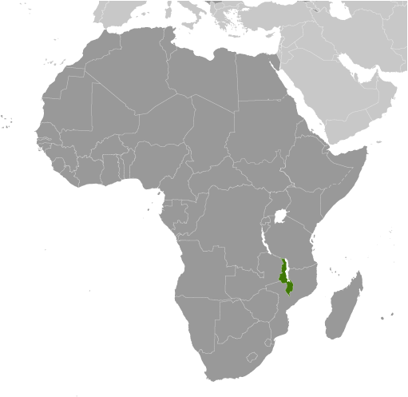
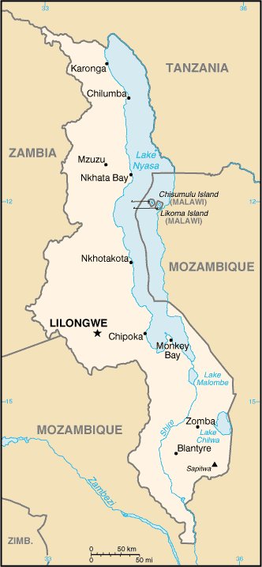
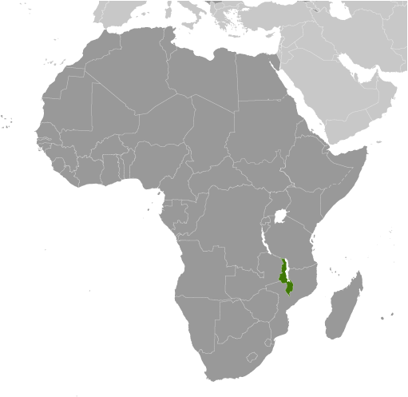
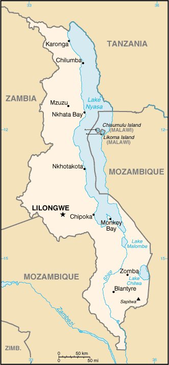

Africa :: MALAWI
Introduction :: MALAWI
-
Established in 1891, the British protectorate of Nyasaland became the independent nation of Malawi in 1964. After three decades of one-party rule under President Hastings Kamuzu BANDA, the country held multiparty presidential and parliamentary elections in 1994, under a provisional constitution that came into full effect the following year. President Bingu wa MUTHARIKA, elected in 2004 after a failed attempt by the previous president to amend the constitution to permit another term, struggled to assert his authority against his predecessor and subsequently started his own party, the Democratic Progressive Party in 2005. MUTHARIKA was reelected to a second term in 2009. He oversaw some economic improvement in his first term, but was accused of economic mismanagement and poor governance in his second term. He died abruptly in 2012 and was succeeded by vice president, Joyce BANDA, who had earlier started her own party, the People's Party. MUTHARIKA's brother, Peter MUTHARIKA, defeated BANDA in the 2014 election. Population growth, increasing pressure on agricultural lands, corruption, and the scourge of HIV/AIDS pose major problems for Malawi.
Geography :: MALAWI
-
Southern Africa, east of Zambia, west and north of Mozambique13 30 S, 34 00 EAfricatotal: 118,484 sq kmland: 94,080 sq kmwater: 24,404 sq kmcountry comparison to the world: 101slightly smaller than Pennsylvaniatotal: 2,857 kmborder countries (3): Mozambique 1,498 km, Tanzania 512 km, Zambia 847 km0 km (landlocked)none (landlocked)sub-tropical; rainy season (November to May); dry season (May to November)narrow elongated plateau with rolling plains, rounded hills, some mountainsmean elevation: 779 melevation extremes: lowest point: junction of the Shire River and international boundary with Mozambique 37 mhighest point: Sapitwa (Mount Mlanje) 3,002 mlimestone, arable land, hydropower, unexploited deposits of uranium, coal, and bauxiteagricultural land: 59.2%arable land 38.2%; permanent crops 1.4%; permanent pasture 19.6%forest: 34%other: 6.8% (2011 est.)740 sq km (2012)population density is highest south of Lake Nyasaflooding; droughts; earthquakesdeforestation; land degradation; water pollution from agricultural runoff, sewage, industrial wastes; siltation of spawning grounds endangers fish populationsparty to: Biodiversity, Climate Change, Climate Change-Kyoto Protocol, Desertification, Endangered Species, Environmental Modification, Hazardous Wastes, Marine Life Conservation, Ozone Layer Protection, Ship Pollution, Wetlandssigned, but not ratified: Law of the Sealandlocked; Lake Nyasa, some 580 km long, is the country's most prominent physical feature; it contains more fish species than any other lake on earth
People and Society :: MALAWI
-
19,196,246note: estimates for this country explicitly take into account the effects of excess mortality due to AIDS; this can result in lower life expectancy, higher infant mortality, higher death rates, lower population growth rates, and changes in the distribution of population by age and sex than would otherwise be expected (July 2017 est.)country comparison to the world: 61noun: Malawian(s)adjective: MalawianChewa 35.1%, Lomwe 18.9%, Yao 13.1%, Ngoni 12%, Tumbuka 9.4%, Sena 3.5%, Tonga 1.8%, Nyanja 1%, Nkhonde 0.9%, other 1.8% (2015-16 est.)English (official), Chichewa (common), Chinyanja, Chiyao, Chitumbuka, Chilomwe, Chinkhonde, Chingoni, Chisena, Chitonga, Chinyakyusa, ChilambyaProtestant 26.9%, Catholic 18.1%, other Christian 41.9%, Muslim 12.5%, other 0.1%, none 0.5% (2015 est.)Malawi has made great improvements in maternal and child health, but has made less progress in reducing its high fertility rate. In both rural and urban areas, very high proportions of mothers are receiving prenatal care and skilled birth assistance, and most children are being vaccinated. Malawi’s fertility rate, however, has only declined slowly, decreasing from more than 7 children per woman in the 1980s to about 5.5 today. Nonetheless, Malawians prefer smaller families than in the past, and women are increasingly using contraceptives to prevent or space pregnancies. Rapid population growth and high population density is putting pressure on Malawi’s land, water, and forest resources. Reduced plot sizes and increasing vulnerability to climate change, further threaten the sustainability of Malawi’s agriculturally based economy and will worsen food shortages. About 80% of the population is employed in agriculture.Historically, Malawians migrated abroad in search of work, primarily to South Africa and present-day Zimbabwe, but international migration became uncommon after the 1970s, and most migration in recent years has been internal. During the colonial period, Malawians regularly migrated to southern Africa as contract farm laborers, miners, and domestic servants. In the decade and a half after independence in 1964, the Malawian Government sought to transform its economy from one dependent on small-scale farms to one based on estate agriculture. The resulting demand for wage labor induced more than 300,000 Malawians to return home between the mid-1960s and the mid-1970s. In recent times, internal migration has generally been local, motivated more by marriage than economic reasons.0-14 years: 46.34% (male 4,427,403/female 4,468,120)15-24 years: 20.55% (male 1,956,360/female 1,988,123)25-54 years: 27.41% (male 2,612,840/female 2,648,997)55-64 years: 3.01% (male 275,998/female 302,286)65 years and over: 2.69% (male 227,582/female 288,537) (2017 est.)total dependency ratio: 91youth dependency ratio: 85.3elderly dependency ratio: 5.7potential support ratio: 17.4 (2015 est.)total: 16.5 yearsmale: 16.4 yearsfemale: 16.7 years (2017 est.)country comparison to the world: 2263.31% (2017 est.)country comparison to the world: 541 births/1,000 population (2017 est.)country comparison to the world: 87.9 deaths/1,000 population (2017 est.)country comparison to the world: 940 migrant(s)/1,000 population (2017 est.)country comparison to the world: 90population density is highest south of Lake Nyasaurban population: 16.6% of total population (2017)rate of urbanization: 4.02% annual rate of change (2015-20 est.)LILONGWE (capital) 905,000; Blantyre-Limbe 808,000 (2015)at birth: 1.02 male(s)/female0-14 years: 0.99 male(s)/female15-24 years: 0.99 male(s)/female25-54 years: 0.99 male(s)/female55-64 years: 0.91 male(s)/female65 years and over: 0.79 male(s)/femaletotal population: 0.98 male(s)/female (2016 est.)18.9 yearsnote: median age at first birth among women 25-29 (2015/16 est.)634 deaths/100,000 live births (2015 est.)country comparison to the world: 13total: 43.4 deaths/1,000 live birthsmale: 50 deaths/1,000 live birthsfemale: 36.7 deaths/1,000 live births (2017 est.)country comparison to the world: 43total population: 61.7 yearsmale: 59.7 yearsfemale: 63.8 years (2017 est.)country comparison to the world: 2005.49 children born/woman (2017 est.)country comparison to the world: 959.2% (2015/16)11.4% of GDP (2014)country comparison to the world: 90.02 physicians/1,000 population (2009)1.3 beds/1,000 population (2011)improved:urban: 95.7% of populationrural: 89.1% of populationtotal: 90.2% of populationunimproved:urban: 4.3% of populationrural: 10.9% of populationtotal: 9.8% of population (2015 est.)improved:urban: 47.3% of populationrural: 39.8% of populationtotal: 41% of populationunimproved:urban: 52.7% of populationrural: 60.2% of populationtotal: 59% of population (2015 est.)9.2% (2016 est.)country comparison to the world: 91 million (2016 est.)country comparison to the world: 1024,000 (2016 est.)country comparison to the world: 12degree of risk: very highfood or waterborne diseases: bacterial and protozoal diarrhea, hepatitis A, and typhoid fevervectorborne diseases: malaria and dengue feverwater contact disease: schistosomiasisanimal contact disease: rabies (2016)5.8% (2016)country comparison to the world: 17216.7% (2014)country comparison to the world: 525.6% of GDP (2015)country comparison to the world: 60definition: age 15 and over can read and writetotal population: 62.1%male: 69.8%female: 55.2% (2015 est.)total: 11 yearsmale: 11 yearsfemale: 11 years (2011)total: 8.6%male: 9.1%female: 8.2% (2013 est.)
Government :: MALAWI
-
conventional long form: Republic of Malawiconventional short form: Malawilocal long form: Dziko la Malawilocal short form: Malawiformer: British Central African Protectorate, Nyasaland Protectorate, Nyasalandetymology: named for the East African Maravi Kingdom of the 16th century; the word "maravi" means "fire flames"presidential republicname: Lilongwegeographic coordinates: 13 58 S, 33 47 Etime difference: UTC+2 (7 hours ahead of Washington, DC, during Standard Time)28 districts; Balaka, Blantyre, Chikwawa, Chiradzulu, Chitipa, Dedza, Dowa, Karonga, Kasungu, Likoma, Lilongwe, Machinga, Mangochi, Mchinji, Mulanje, Mwanza, Mzimba, Neno, Ntcheu, Nkhata Bay, Nkhotakota, Nsanje, Ntchisi, Phalombe, Rumphi, Salima, Thyolo, Zomba6 July 1964 (from the UK)Independence Day (Republic Day), 6 July (1964)history: previous 1953 (preindependence), 1966; latest drafted January to May 1994, approved 16 May 1994, entered into force 18 May 1995amendments: proposed by the National Assembly; passage of amendments affecting constitutional articles including the sovereignty and territory of the state, fundamental constitutional principles, human rights, voting rights, and the judiciary requires majority approval in a referendum and majority approval by the Assembly; passage of other amendments requires at least two-thirds majority vote of the Assembly; amended several times, last in 2013 (2017)mixed legal system of English common law and customary law; judicial review of legislative acts in the Supreme Court of Appealaccepts compulsory ICJ jurisdiction with reservations; accepts ICCt jurisdictioncitizenship by birth: nocitizenship by descent only: at least one parent must be a citizen of Malawidual citizenship recognized: noresidency requirement for naturalization: 7 years18 years of age; universalchief of state: President Arthur Peter MUTHARIKA (since 31 May 2014); Vice President Saulos CHILIMA (since 31 May 2014); note - the president is both chief of state and head of governmenthead of government: President Arthur Peter MUTHARIKA (since 31 May 2014); Vice President Saulos CHILIMA (since 31 May 2014)cabinet: Cabinet named by the presidentelections/appointments: president directly elected by simple majority popular vote for a 5-year term (eligible for a second term); election last held on 20 May 2014 (next to be held in May 2019)election results: Peter MUTHARIKA elected president; percent of vote - Peter MUTHARIKA (DPP) 36.4%, Lazarus CHAKWERA (MCP) 27.8%, Joyce BANDA (PP) 20.2%, Atupele MULUZI (UDF) 13.7%, other 1.9%description: unicameral National Assembly (193 seats; members directly elected in single-seat constituencies by simple majority vote to serve 5-year terms)elections: last held on 20-22 May 2014 (next to be held in May 2019)election results: percent of vote by party - DPP 22.0%, MCP 17.4%, PP 18.5%, UDF 9.6%, other 2.8%, independent 29.7%; seats by party - DPP 51, MCP 48, PP 26, UDF 14, other 2, independent 52highest court(s): Supreme Court of Appeal (consists of the chief justice and at least 3 judges)judge selection and term of office: Supreme Court chief justice appointed by the president and confirmed by the National Assembly; other judges appointed by the president upon recommendation of the Judicial Service Commission, which regulates judicial officers; judges serve until age 65subordinate courts: High Court; magistrate courts; Industrial Relations Court; district and city traditional or local courtsAlliance for Democracy or AFORD [Godfrey SHAWA]Democratic Progressive Party or DPP [Peter MUTHARIKA]Malawi Congress Party or MCP [Lazarus CHAKWERA]People's Party or PP [Joyce BANDA]United Democratic Front or UDF [Atupele MULUZI]Council for NGOs in Malawi or CONGOMA (human rights, democracy, development)Human Rights Consultative Committee or HRCC (human rights)Malawi Economic Justice Network or MEJN (pro-economic growth, development, government accountability)Malawi Law Society (an umbrella organization of all lawyers in Malawi)Public Affairs Committee or PAC (promotes democracy, development, peace, unity)ACP, AfDB, AU, C, CD, COMESA, FAO, G-77, IAEA, IBRD, ICAO, ICCt, ICRM, IDA, IFAD, IFC, IFRCS, ILO, IMF, IMO, Interpol, IOC, IOM, IPU, ISO (correspondent), ITSO, ITU, ITUC (NGOs), MIGA, MINURSO, MONUSCO, NAM, OPCW, SADC, UN, UNCTAD, UNESCO, UNIDO, UNISFA, UNOCI, UNWTO, UPU, WCO, WFTU (NGOs), WHO, WIPO, WMO, WTOchief of mission: Ambassador Edward Yakobe SAWERENGERA (since 16 September 2016)chancery: 2408 Massachusetts Avenue NW, Washington, DC 20008telephone: [1] (202) 721-0270FAX: [1] (202) 721-0288chief of mission: Ambassador Virginia E. PALMER (since 5 February 2015)embassy: 16 Jomo Kenyatta Road, Lilongwe 3mailing address: P.O. Box 30016, Lilongwe 3, Malawitelephone: [265] (1) 773-166FAX: [265] (1) 770-471three equal horizontal bands of black (top), red, and green with a radiant, rising, red sun centered on the black band; black represents the native peoples, red the blood shed in their struggle for freedom, and green the color of nature; the rising sun represents the hope of freedom for the continent of Africalion; national colors: black, red, greenname: "Mulungu dalitsa Malawi" (Oh God Bless Our Land of Malawi)lyrics/music: Michael-Fredrick Paul SAUKAnote: adopted 1964
Economy :: MALAWI
-
Landlocked Malawi ranks among the world's most densely populated and least developed countries. The country’s economic performance has historically been constrained by policy inconsistency, macroeconomic instability, limited connectivity to the region and the world, poor infrastructure, rampant corruption, high population growth, and poor health and education outcomes that limit labor productivity. The economy is predominately agricultural with about 80% of the population living in rural areas. Agriculture accounts for about one-third of GDP and 80% of export revenues. The performance of the tobacco sector is key to short-term growth as tobacco accounts for more than half of exports.The economy depends on substantial inflows of economic assistance from the IMF, the World Bank, and individual donor nations. In 2006, Malawi was approved for relief under the Heavily Indebted Poor Countries (HIPC) program but recent increases in domestic borrowing mean that debt servicing in 2016 exceeded the levels prior to HIPC debt relief. President MUTHARIKA launched the Public Financial Management and Public Sector reform programs upon taking office in 2014 to increase accountability following the 2013 “Cashgate” scandal.Heavily dependent on rain-fed agriculture, with corn being the staple crop, Malawi’s economy was hit hard by the El Nino-driven drought in 2015 and 2016. The drought also slowed economic activity, led to two consecutive years of declining economic growth, and contributed to high inflation rates. Following a successful humanitarian response in 2016 and 2017 providing food assistance to 6.7 million people - 40% of the population - and increased transparency by agricultural parastatals, the economy has stabilized and inflation is dropping.$21.13 billion (2016 est.)$20.4 billion (2015 est.)$19.61 billion (2014 est.)note: data are in 2016 dollarscountry comparison to the world: 144$5.489 billion (2016 est.)2.3% (2016 est.)3% (2015 est.)5.7% (2014 est.)country comparison to the world: 125$1,100 (2016 est.)$1,100 (2015 est.)$1,100 (2014 est.)note: data are in 2016 dollarscountry comparison to the world: 223-3.3% of GDP (2016 est.)2.7% of GDP (2015 est.)3.6% of GDP (2014 est.)country comparison to the world: 178household consumption: 81%government consumption: 16.2%investment in fixed capital: 11.9%investment in inventories: 2.9%exports of goods and services: 33.3%imports of goods and services: -45.2% (2016 est.)agriculture: 28.3%industry: 16%services: 55.8% (2016 est.)tobacco, sugarcane, tea, corn, potatoes, sweet potatoes, cassava (manioc, tapioca), sorghum, pulses, cotton, groundnuts, macadamia nuts, coffee; cattle, goatstobacco, tea, sugar, sawmill products, cement, consumer goods2.4% (2016 est.)country comparison to the world: 967 million (2013 est.)country comparison to the world: 67agriculture: 64.1%industry: 6.7%services: 29.2% (2013 est.)20.4% (2013 est.)country comparison to the world: 18650.7% (2010 est.)lowest 10%: 2.2%highest 10%: 37.5% (2010 est.)46.1 (2010)39.9 (2004)country comparison to the world: 32revenues: $1.109 billionexpenditures: $1.409 billion (2016 est.)20.2% of GDP (2016 est.)country comparison to the world: 154-5.5% of GDP (2016 est.)country comparison to the world: 16356.1% of GDP (2016 est.)40.5% of GDP (2015 est.)country comparison to the world: 811 July - 30 June21.7% (2016 est.)21.9% (2015 est.)country comparison to the world: 22024% (25 November 2016)27% (July 2016)country comparison to the world: 344.1% (31 December 2016 est.)44.39% (31 December 2015 est.)country comparison to the world: 3$536.6 million (31 December 2016 est.)$478.4 million (31 December 2015 est.)country comparison to the world: 165$1.238 billion (31 December 2016 est.)$1.172 billion (31 December 2015 est.)country comparison to the world: 169$1.054 billion (31 December 2016 est.)$812.4 million (31 December 2015 est.)country comparison to the world: 166$796.2 million (31 December 2016 est.)$936.3 million (31 December 2015 est.)$1.341 billion (31 December 2014 est.)country comparison to the world: 108$-739 million (2016 est.)$-714.9 million (2015 est.)country comparison to the world: 124$1.361 billion (2016 est.)$1.438 billion (2015 est.)country comparison to the world: 151tobacco 55%, dried legumes (8.8%), sugar (6.7%), tea (5.7%), cotton (2%), peanuts, coffee, soy (2015 est.)Zimbabwe 12.9%, Mozambique 11%, Belgium 8.2%, South Africa 7.2%, US 6%, China 4.6%, Germany 4.3%, UK 4.2% (2016)$2.318 billion (2016 est.)$2.146 billion (2015 est.)country comparison to the world: 153food, petroleum products, semi-manufactures, consumer goods, transportation equipmentSouth Africa 20.2%, China 13.8%, India 10.8%, UAE 9.7%, Zambia 5.7% (2016)$563.1 million (31 December 2016 est.)$701.5 million (31 December 2015 est.)country comparison to the world: 143$1.985 billion (31 December 2016 est.)$1.766 billion (31 December 2015 est.)country comparison to the world: 151$800 million (2015)country comparison to the world: 120$NAMalawian kwachas (MWK) per US dollar -713.85 (2016 est.)713.85 (2015 est.)499.6 (2014 est.)424.9 (2013 est.)249.11 (2012 est.)
Energy :: MALAWI
-
population without electricity: 14,900,000electrification - total population: 9%electrification - urban areas: 32%electrification - rural areas: 4% (2013)2.12 billion kWh (2015 est.)country comparison to the world: 1391.972 billion kWh (2015 est.)country comparison to the world: 1440 kWh (2016 est.)country comparison to the world: 1670 kWh (2016 est.)country comparison to the world: 172353,100 kW (2017 est.)country comparison to the world: 1520.5% of total installed capacity (2015 est.)country comparison to the world: 2120% of total installed capacity (2015 est.)country comparison to the world: 13893.3% of total installed capacity (2015 est.)country comparison to the world: 86.1% of total installed capacity (2015 est.)country comparison to the world: 870 bbl/day (2016 est.)country comparison to the world: 1670 bbl/day (2014 est.)country comparison to the world: 1600 bbl/day (2014 est.)country comparison to the world: 1580 bbl (1 January 2017 es)country comparison to the world: 1650 bbl/day (2014 est.)country comparison to the world: 1717,000 bbl/day (2015 est.)country comparison to the world: 1650 bbl/day (2014 est.)country comparison to the world: 1786,843 bbl/day (2014 est.)country comparison to the world: 1520 cu m (2017 est.)country comparison to the world: 1660 cu m (2017 est.)country comparison to the world: 2060 cu m (2017 est.)country comparison to the world: 1460 cu m (2017 est.)country comparison to the world: 1530 cu m (2017 est.)country comparison to the world: 1691.9 million Mt (2013 est.)country comparison to the world: 150
Communications :: MALAWI
-
total subscriptions: 11,234subscriptions per 100 inhabitants: less than 1 (July 2016 est.)country comparison to the world: 153total: 7,178,384subscriptions per 100 inhabitants: 39 (July 2016 est.)country comparison to the world: 117general assessment: rudimentary; one fixed-line and two mobile-cellular operators govern the marketdomestic: limited fixed-line subscribership of about 1 per 100 households; mobile-cellular services are expanding but network coverage is limited and is based around the main urban areas; mobile-cellular subscribership approaching 40 per 100 householdsinternational: country code - 265; satellite earth stations - 2 Intelsat (1 Indian Ocean, 1 Atlantic Ocean) (2016)radio is the main broadcast medium; privately owned Zodiak radio has the widest national broadcasting reach, followed by state-run radio; numerous private and community radio stations broadcast in cities and towns around the country; the largest TV network is government-owned, but at least 4 private TV networks broadcast in urban areas; relays of multiple international broadcasters are available (2017).mwtotal: 1,785,369percent of population: 9.6% (July 2016 est.)country comparison to the world: 135
Transportation :: MALAWI
-
number of registered air carriers: 1inventory of registered aircraft operated by air carriers: 2annual passenger traffic on registered air carriers: 6,010annual freight traffic on registered air carriers: 5,467 mt-km (2015)7Q (2016)32 (2013)country comparison to the world: 113total: 7over 3,047 m: 11,524 to 2,437 m: 2914 to 1,523 m: 4 (2017)total: 251,524 to 2,437 m: 1914 to 1,523 m: 11under 914 m: 13 (2013)total: 767 kmnarrow gauge: 767 km 1.067-m gauge (2014)country comparison to the world: 98total: 15,450 kmpaved: 6,951 kmunpaved: 8,499 km (2011)country comparison to the world: 121700 km (on Lake Nyasa [Lake Malawi] and Shire River) (2010)country comparison to the world: 75lake port(s): Chipoka, Monkey Bay, Nkhata Bay, Nkhotakota, Chilumba (Lake Nyasa)
Military and Security :: MALAWI
-
0.61% of GDP (2016)0.7% of GDP (2015)0.89% of GDP (2014)1.24% of GDP (2013)0.82% of GDP (2012)country comparison to the world: 104Malawi Defense Forces (MDF): Army (includes Air Wing, Marine Unit) (2012)18 years of age for voluntary military service; high school equivalent required for enlisted recruits and college equivalent for officer recruits; initial engagement is 7 years for enlisted personnel and 10 years for officers (2014)
Transnational Issues :: MALAWI
-
dispute with Tanzania over the boundary in Lake Nyasa (Lake Malawi) and the meandering Songwe River; Malawi contends that the entire lake up to the Tanzanian shoreline is its territory, while Tanzania claims the border is in the center of the lake; the conflict was reignited in 2012 when Malawi awarded a license to a British company for oil exploration in the lakerefugees (country of origin): 5,444 (Democratic Republic of the Congo) (2016)IDPs: 8,463 (floods in 2015) (2016)